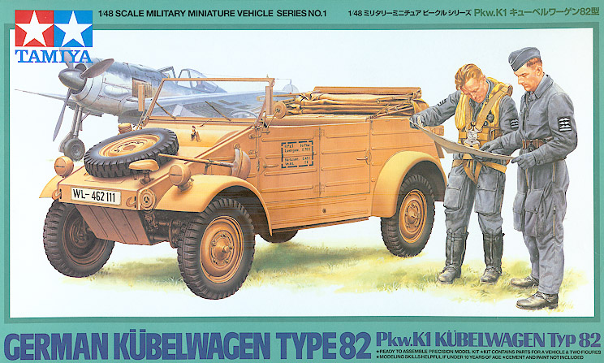
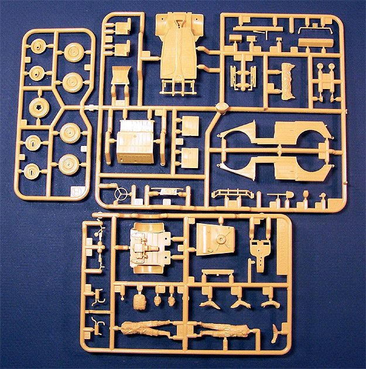
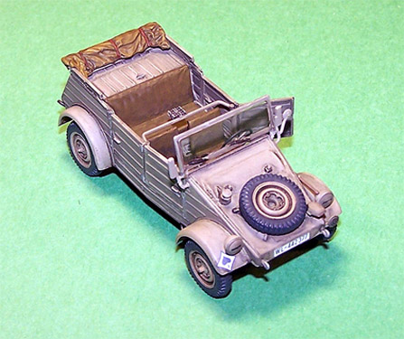
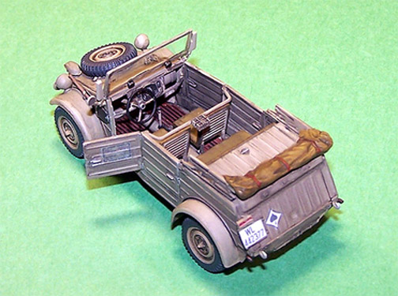
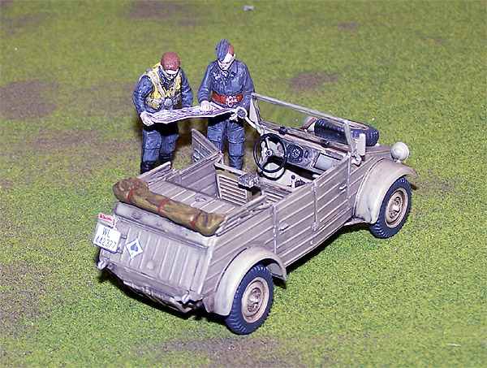

{kind=link}


Tamiya 1/48 Kubelwagen Type 82

Kit #32501
MSRP $14.95
Images and text Copyright � 2005 by Matt Swan
Developmental Background
Dr. Ferdinand Porsche and by his son Ferry are responsible for this little beastie. It was originally developed just before the war as a fun vehicle based on the chassis of what was to become the Volkswagen passenger car. Like the Volkswagen this had an air-cooled engine mounted in the rear and was rear wheel drive. With the war looming the military quickly saw the capabilities of the vehicle and it was adopted as a light field car, filling a very similar role to the American Jeep.
With its four wheel independent suspension, 23.5hp air-cooled 4 cylinder 985cc engine and rugged durability the vehicle became a staple in motor pools of all Axis services. Over 50,000 units were produced during WWII and the factory, located in the English sector of Germany, was resurrected and production continued for several years after the war but marketing people of the time saw no future for it. This combined with a public perception that linked the vehicle to the Nazi regime resulted in the line being discontinued. Today there are several collectors groups that restore, drive, sell and trade these old German vehicles.
The Kit

This is one of the first vehicle kits that Tamiya released in 1/48 scale and is now available in this version and an Afrika Korps version. The only difference between the kits is the two figures, the color scheme and that the tires are replaced with balloon tires. The kit comes as two sprues of injection molded beige plastic, a small clear sprue containing the windshield and a very small sheet of decals. Not only does this kit include a well detailed Kubelwagen but also two figures with arms and heads as separate pieces.
The parts all show a good level of detail with both raised and recessed surface features. The trees are clean and free of flash. The engineering looks very good and the parts fit together very well. The model builds up quickly and the instructions are quite helpful.
The instruction sheet is a single long, narrow page that includes a brief historical background of the vehicle, a color code chart and a few little accessories such as a map that can be cut out for use with the figures and some sign post flags. I elected to scan the map and reprint in on some clear decal paper several times. One copy was cut out, folded and used with the kit figure while the other copies were kept for later use (it is a very nice little map).
Conclusions
There are several Kubelwagen kits on the market in 1/48 scale these days but this seems to be one of the nicer ones. There are several aftermarket pieces kicking around for it as well, Eduard offers three different PE detail packages and a mask set, Hauler has a PE set for it and Gaso.Line offers a set of balloon tires for the Afrika Korps version.
I sat down at the modeling table and put this kit together over a single weekend. Total time invested was somewhere around eight hours.


